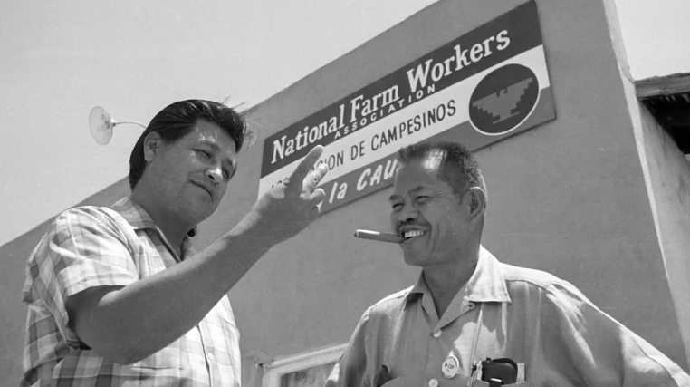

How To Stop Corporate Colonialism
What Really Happened With The Delano Grape Strike?
10/8/2025 by Nick
Delano Labor Strike
The Delano grape strike was a labor strike organized by the Agricultural Workers Organizing Committee (AWOC), a predominantly Filipino and AFL-CIO-sponsored labor organization, against table grape growers in Delano, California, to fight against the exploitation of farm workers. The strike began on September 8, 1965, and one week later, the predominantly Mexican National Farmworkers Association (NFWA) joined the cause. In August 1966, the AWOC and the NFWA merged to create the United Farm Workers (UFW) Organizing Committee. So where can we go from here?
Who Was Involved?
On September 8, 1965, hundreds of AWOC members gathered in Filipino Hall in Delano to negotiate with the growers, but the growers never showed up. After much discussion among the group, consisting of mainly Filipinos, and some Black, Arab, Puerto Rican, Mexican and white workers, Itliong called a vote on whether or not to strike.
Who Was In Favor Of This Strike?
Everyone stood up in favor–it was a unanimous decision; they would be going on strike. The very next day AWOC members walked off fields to strike on the picket line, and this time it was for more than wages, it would include the right to unionize as well as better working conditions and benefits.
Retaliation From Farm Guards
After a couple weeks of the strike and AWOC members being met with intimidation and violence from farm guards, Itliong realized that success would be more achievable if two of the biggest groups of farm workers–Filipinos and Mexicans–united in solidarity. Itliong was already seeing that farmers were hiring other groups during this strike, which was undermining its goal. Itliong approached Cesar Chavez, a prominent leader in the National Farm Workers Association (NFWA) and asked Chavez for them to join the strike. At first, Chavez did not feel they were ready but agreed to bring it to the group for a vote. Over a thousand NFWA workers met for discussion, including Dolores Huerta, another organizer who Itliong had known from his time organizing in Stockton, CA.
What Did Farmers Do Next?
After discussion, Chavez spoke about joining Filipino strikers in solidarity as the outcome could benefit all workers. The crowd voted and again a unanimous decision was made–the NFWA would strike with the AWOC. Led by Chicano and Filipino organizers such as Chavez, Itliong, Ben Gines, Huerta, Gilbert Padilla, and Philip Vera Cruz, they pushed for new contracts, including higher wages and better working conditions, with powerful California growers by initiating a strike across ten grape vineyards near Delano, California and staging a nationwide grape boycott.
| Pros: | Cons: | Higher pay and health benefits | Harassment and violence |
|---|---|
| Founding of the United Farm Workers | Loss of Property |
| Safer working conditions | Loss of Wages |
What Did The Strike Result To?
The strike lasted for five years and was characterized by its grassroots efforts—consumer boycotts, marches, community organizing and nonviolent resistance—which gained the movement national attention. It received significant coverage in religious publications, and the Catholic church served as a mediator between the two sides in the later years. In July 1970, the strike resulted in a victory for farm workers, due largely to a consumer boycott of non-union grapes, when a collective bargaining agreement was reached with major table grape growers, affecting more than 10,000 farm workers. In conclusion, to stop Corporate Colonialism, make your voices heard.
Sources:
Blog Comments
I like the content of the article but it feels plain. I would try changing up the font and/or adding more images. The colors could also use an adjustment (maybe a dark purple background and black font-color?).
Good idea. I have changed the background color to be a purple and text as black.
I would recommend adding more images and maybe changing the font and font size to make your page look even better.
I have changed it to have more details and fixed some code.
The content of your blog post is very nice, but I personally find the design to have too much purple which makes it hard to focus. My advice would be to make the body of the html white and the html itself have the purple background. That way it becomes easier to concentrate as you read the content.
Great idea to have the text color be white since it did look a little hard to read.
I like how its purple just like the image and how its listed and spaced and theres pros and cons
Thank you, I appreciate it.
Your blog is one of the most informative, and is about a topic I have never heard of. I found the story interesting. Although the links are slightly hard to see against the dark background.
Great Idea! I wil make it so its easier to see the source links.